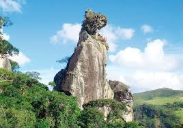

Conheça Nova Friburgo

Nova Friburgo é um município fluminense localizado na Região Serrana, a cerca de 800 metros de altitude. Fundada em 1819 por decreto de D. João VI, é uma cidade turística de aproximadamente 203 mil habitantes, amplamente conhecida pelo seu clima ameno e aspectos culturais influenciados pela presença de imigrantes suíços, que posteriormente receberam a companhia de outros grupos. A presença dessas diferentes culturas influenciou diversos aspectos da vida local, como a arquitetura, as tradições, as festas, os costumes e, principalmente, a gastronomia. Até hoje, essa herança cultural permanece presente na cidade e contribui para tornar Nova Friburgo um destino marcado pela diversidade e pela forte ligação com suas raízes (principalmente europeias). O ecoturismo é um dos grandes pilares locais, impulsionado pelas cachoeiras dos distritos de Lumiar e São Pedro da Serra. Além do forte apelo natural e de sua gastronomia de montanha, o município detém o título de Capital Nacional da Moda Íntima, sendo responsável por cerca de 25% da produção de lingerie do país, consolidando-se como uma das cidades mais seguras e prósperas do estado.
Pontos turísticos
Nova Friburgo reúne paisagens naturais, espaços históricos e atrações que refletem a diversidade cultural e a beleza da Região Serrana do Rio de Janeiro. Entre seus principais pontos turísticos estão a Pedra do Cão Sentado, o Teleférico do Suspiro, a Praça Getúlio Vargas, o Jardim do Nêgo e o Parque Estadual dos Três Picos. Nos distritos de Lumiar e São Pedro da Serra, os visitantes também encontram cachoeiras, rios, trilhas e belas paisagens cercadas pela Mata Atlântica. Essa variedade faz da cidade um destino que combina aventura, tranquilidade, história e contato com a natureza, oferecendo experiências para diferentes perfis de visitantes.
Gastronomia
A gastronomia de Nova Friburgo é marcada pela combinação entre as tradições trazidas pelos imigrantes europeus e os ingredientes e costumes brasileiros. A influência suíça, alemã, italiana e de outros povos pode ser percebida em diferentes pratos, doces, queijos, embutidos e produtos artesanais encontrados na região. O clima ameno da Serra também favorece a produção de alimentos e bebidas característicos, como chocolates, cervejas artesanais, cafés e produtos coloniais. Além de fazer parte da cultura local, a gastronomia se tornou um importante atrativo para os visitantes, que encontram restaurantes, cafés, mercados e estabelecimentos que valorizam os sabores e produtos da Região Serrana.
Eventos
Ao longo do ano, Nova Friburgo recebe diversos eventos que movimentam a cidade e contribuem para a valorização de sua cultura e de suas tradições. A programação reúne atividades para diferentes públicos, incluindo manifestações culturais, apresentações artísticas, gastronomia, lazer e celebrações que refletem a história e a identidade do município. Além de proporcionarem momentos de entretenimento, essas festividades também ajudam a fortalecer o turismo e aproximam visitantes da cultura local, tornando a experiência de conhecer Nova Friburgo ainda mais especial.